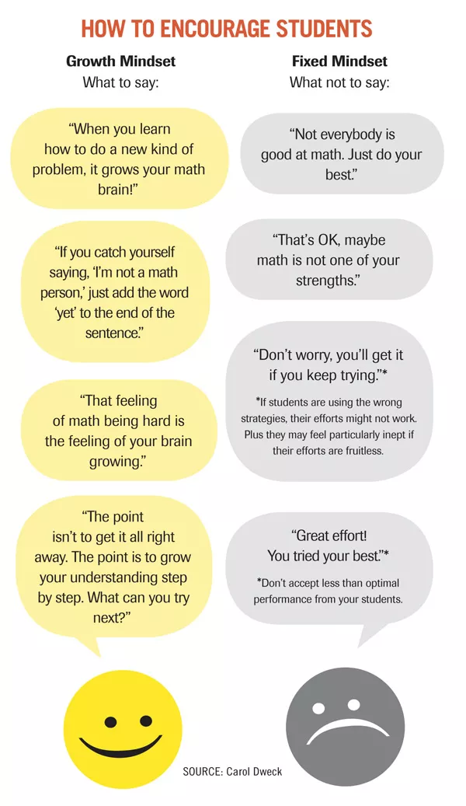
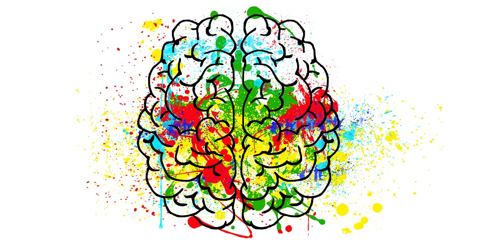
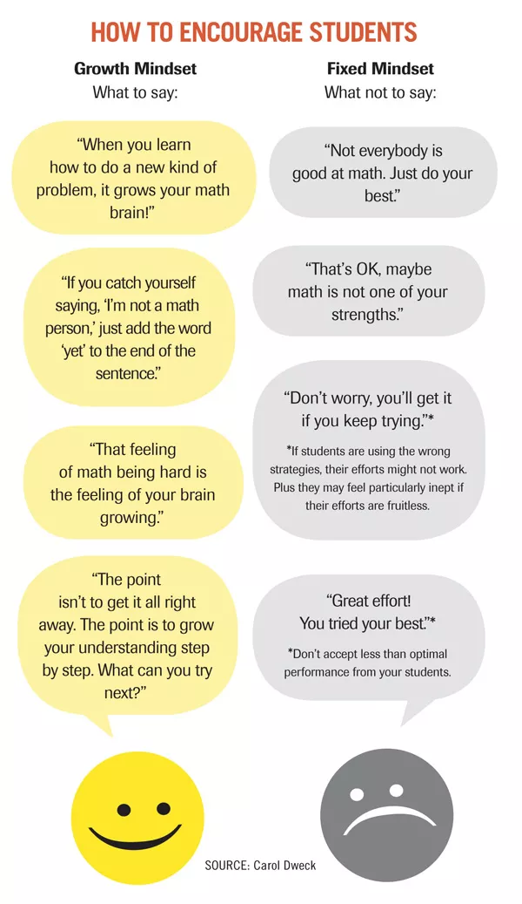

Why Neuroplasticity and Growth Mindset are so important?
Neuroplasticity
– or brain plasticity – is the ability of the brain to modify it’s connections or re-wire itself. When we learn something new, we create new connections between our neurons. We rewire our brains to adapt to new circumstances. This happens on a daily basis, but it’s also something that we can encourage and stimulate.
Neuroplasticity can work for you. Studies show there are many benefits of Neuroplasticity. Some of them are:
What is Neuroplasticity? A Psychologist Explains [+14 Exercises]
What is Neuronal Plasticity and Why Is It Important?
Neuroplasticity
Growth Mindset
What is growth mindset? Growth mindset definition:
One important thing in the Growth Mindset modeling is to choose the right words for supporting. I was surprised that "Don’t worry, you’ll get it if you keep trying" is modeling the Fixed Mindset. I think we need to analyse what we say to others (especially to children) and what we hear from other people.

I like this 25 suggestions from Saga Briggs (2015). I think it would be wonderful and very helpful, if I integrate some of them into my learning journey.
Growth Mindset
The Importance of Having a "Growth Mindset"
Carol Dweck Revisits the "Growth Mindset"
Growth Mindset vs. Fixed + Key Takeaways From Dweck's Book
Neuroplasticity can work for you. Studies show there are many benefits of Neuroplasticity. Some of them are:
- Recovery from brain events like strokes;
- Recovery from traumatic brain injuries;
- Losing function in one area may enhance functions in other areas (e.g., if one sense is lost, the others may become heightened);
- Enhanced memory abilities;
- Highly effective in treating anxiety disorders;
- More effective learning;
- Get enough quality sleep. Sleep helps with storage and recall of new information. I know I have not enough sleep. I need to fix this problem, if I want good memory.
- Regular physical activity. As I know, four times per week for at least 20 minutes is the minimum people should aim to do. Physical activity will give your brain the energy it needs to forge new neural pathways in addition to promoting general well-being.
- Keep learning. Learning new skills that really challenge you can do amazing things for your brain plasticity. Also, learning something new is so interesting! New knowledge => new opportunities.
What is Neuroplasticity? A Psychologist Explains [+14 Exercises]
What is Neuronal Plasticity and Why Is It Important?
Neuroplasticity

Growth Mindset
What is growth mindset? Growth mindset definition:
The term "growth mindset" comes from the groundbreaking work of Carol Dweck. She identified everyone holds ideas about their own potential. According Dr. Dweck and her colleagues research students with a fixed mindset are those who are more likely to give up easily, whereas students with a growth mindset are those who keep going even when work is hard, and who are persistent. Having a growth mindset is important because it can help you overcome obstacles you may face when learning something new or developing a new skill. Growth mindsets understand the importance of persistence and determination."A growth mindset is when students understand that their abilities can be developed,"
By changing the way you think, you can change the way you learn. Knowing that your talents and intelligence can be developed allows you to explore, experience, and achieve more in life. (gopeer.org)"The growth mindset allows people to value what they’re doing regardless of the outcome. They’re tackling problems, charting new courses, working on important issues. Maybe they haven’t found the cure for cancer, but the search was deeply meaningful,"
One important thing in the Growth Mindset modeling is to choose the right words for supporting. I was surprised that "Don’t worry, you’ll get it if you keep trying" is modeling the Fixed Mindset. I think we need to analyse what we say to others (especially to children) and what we hear from other people.

I like this 25 suggestions from Saga Briggs (2015). I think it would be wonderful and very helpful, if I integrate some of them into my learning journey.
- Acknowledge and embrace your imperfections; don’t hide from your weaknesses.
- View challenges as opportunities for self-improvement.
- Try different learning tactics and strategies; don’t consider any strategies one-size-fits-all.
- Keep up on the research on brain plasticity to continually encourage the growth mindset.
- Replace the word "failing" with the word "learning" in your vocabulary.
- Stop seeking approval for others, and prioritize learning over approval.
- Value the learning process over the end result.
- Cultivate a sense of purpose, and keep things in perspective.
- Celebrate your growth with others, and celebrate their growth as well.
- Emphasize learning well over learning quickly.
- Reward actions instead of traits.
- Redefine "genius" as hard work plus talent, rather than talent alone.
- Give constructive criticism, and accept criticism of your own work as constructive.
- Disassociate improvement from failure; "room for improvement" does not mean "failure".
- Reflect on your learning regularly.
- Reward hard work before talent or inherent ability.
- Emphasize the relationship between learning and "brain training"; like any other muscle, the brain can be trained.
- Cultivate your grit (determination and perseverance).
- Abandon the idea of succeeding on talent alone; recognize that it will always take some work as well.
- Use the phrase "not yet" more often, as in, "I haven’t mastered it yet".
- Learn from the mistakes that others make.
- Make a new goal for every goal you accomplish; never stop striving towards your goals.
- Take risks and be vulnerable with others.
- Think realistically about how much time and effort your goal will take.
- Take ownership of your own attitude, and take pride in your developing growth mindset.
Growth Mindset
The Importance of Having a "Growth Mindset"
Carol Dweck Revisits the "Growth Mindset"
Growth Mindset vs. Fixed + Key Takeaways From Dweck's Book
Nov 30, 2020